SMK Negeri 1 Surabaya · X RPL 2
PPLM
Praktik Pengalaman Lapangan Mandiri
Mengajar, membaca bukti, memperbaiki langkah.
Perjalanan dari orientasi dan praktik terbimbing menuju empat siklus pembelajaran mandiri. Tanggal pertemuan diselaraskan dengan modul dan log refleksi aktual.
Tahap awal
Orientasi dan Observasi
28 Juli & 4 Agustus 2026
Praktik Pembelajaran Terbimbing
Tahap awal PPL Mandiri untuk mengenali kondisi kelas, menyesuaikan media, tempo penyampaian, ketegasan, dan pengelolaan waktu. Bagian ini berbeda dari PPL Terbimbing Semester 1.
LK 3 Refleksi Praktik Mengajar Terbimbing PPLMRefleksi tahap terbimbing Semester 2Buka ↗Laporan PelaksanaanPraktik pembelajaran terbimbingBuka ↗Laporan Evaluasi dan RefleksiTahap terbimbingBuka ↗

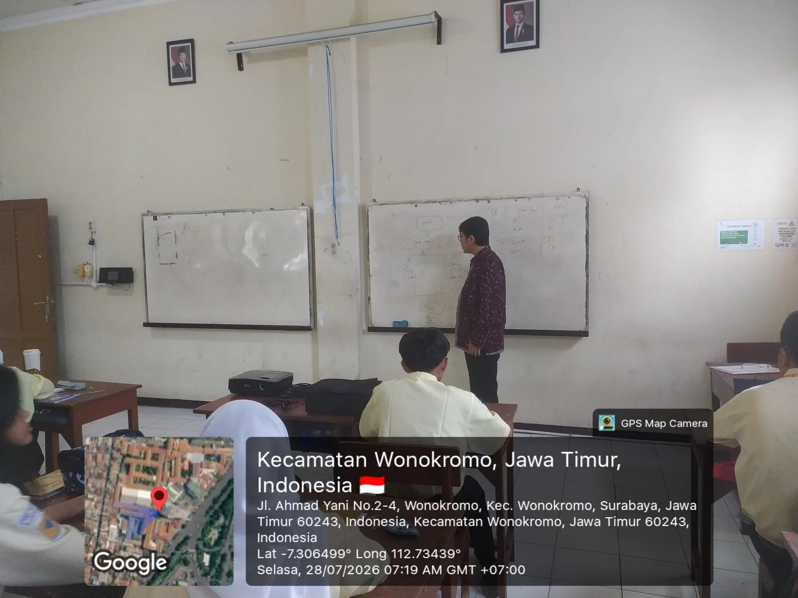

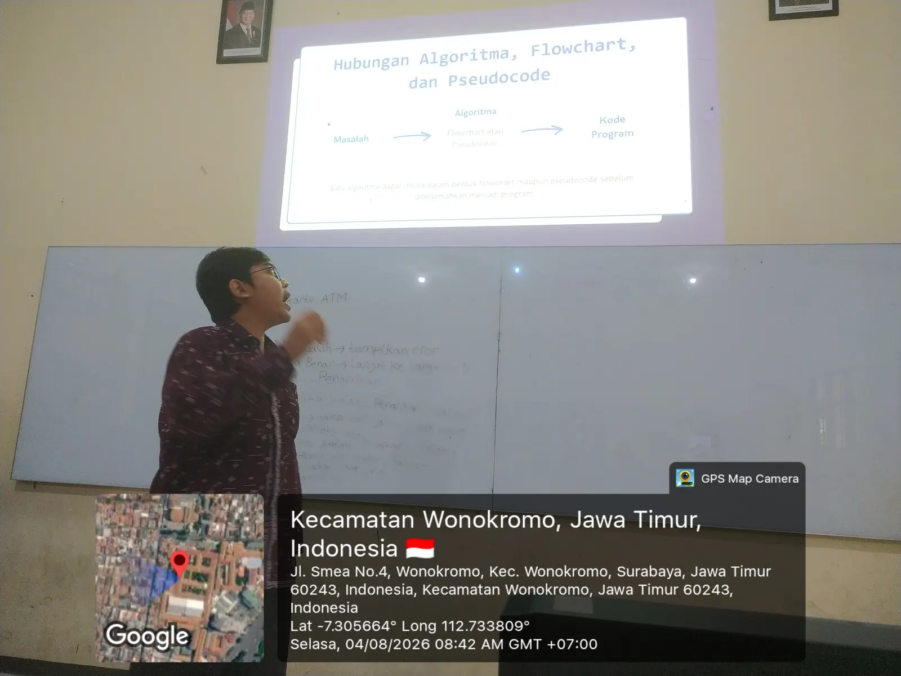
Praktik pembelajaran mandiri
Empat siklus
Siklus 2 · Analisis Gim
Siklus 3 · Konsep Gim dan Scratch
Siklus 4 · Struktur Data dan Linear Search
Siklus 1 · 18 Agustus 2026
Dekomposisi dalam Pemecahan Masalah
Pembelajaran mengaitkan dekomposisi dengan gim. Fokus refleksi terletak pada rasa aman saat berpartisipasi, dukungan teman, dan penggunaan konteks yang dekat dengan murid.
Modul Siklus 1DekomposisiBuka ↗LK 4.1 Refleksi Praktik Pembelajaran MandiriSiklus 1Baca ↗Laporan Pelaksanaan Siklus 1Pelaksanaan dan luaranBuka ↗

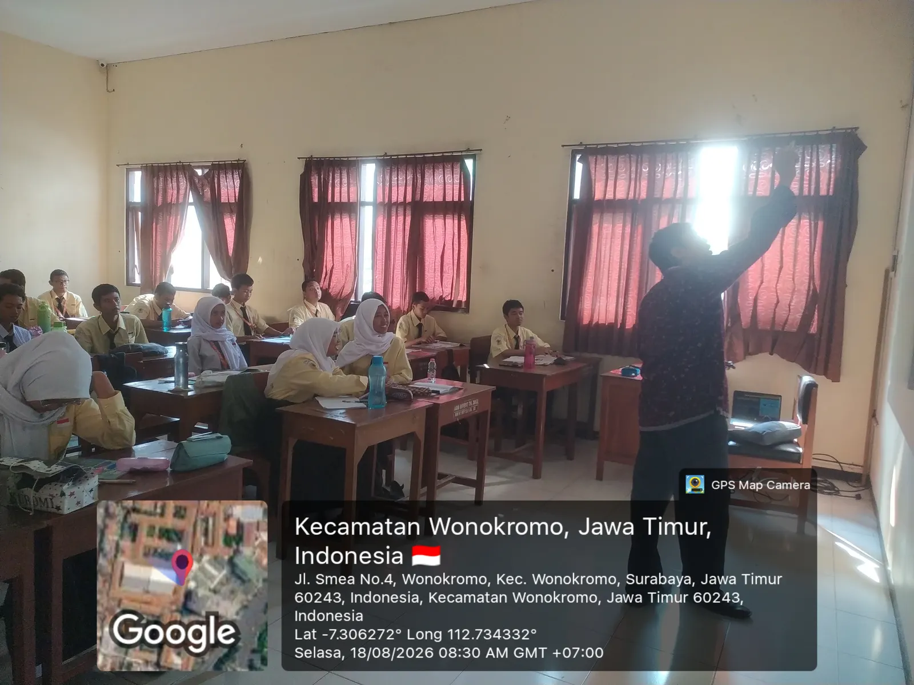

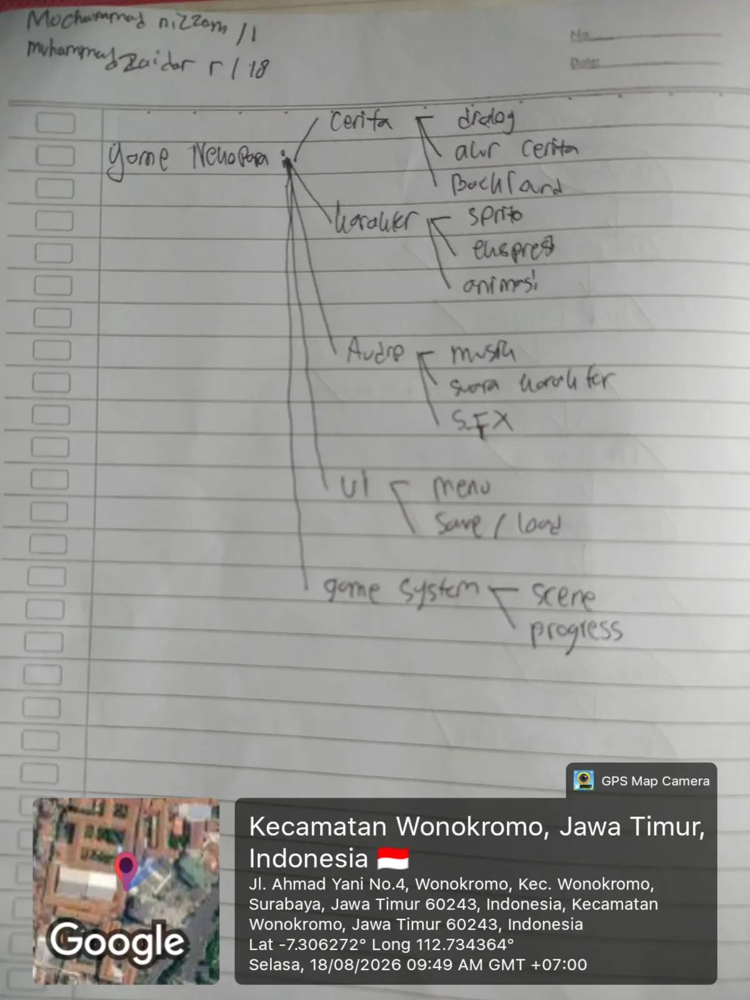

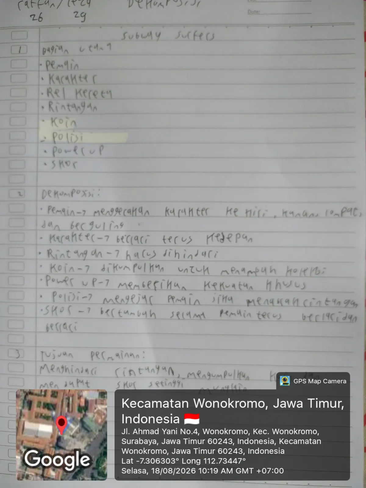
Siklus 2 · 8 September 2026
Analisis Gim sebagai Sistem
Proyek diselaraskan dengan CP Informatika. Instruksi diperjelas, bantuan diberikan sesuai kebutuhan, dan dukungan teman sebaya dimanfaatkan saat muncul kendala teknis.
Modul Siklus 2Analisis GimBuka ↗LK 4.2 Refleksi Praktik Pembelajaran MandiriSiklus 2Baca ↗Laporan Pelaksanaan Siklus 2Pelaksanaan dan luaranBuka ↗

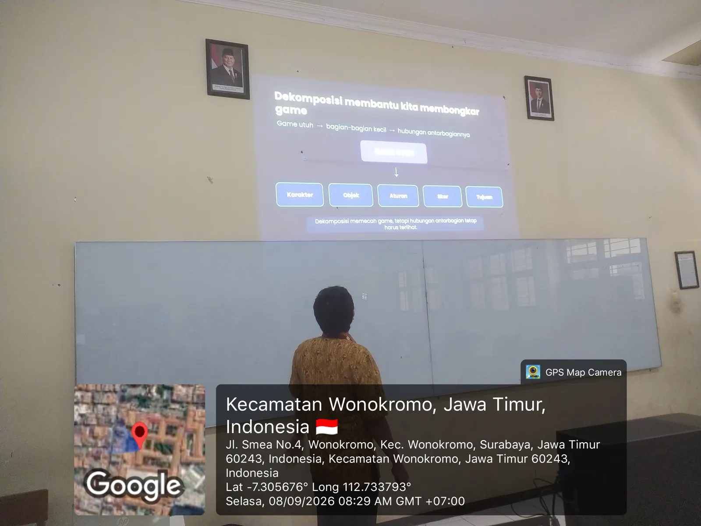

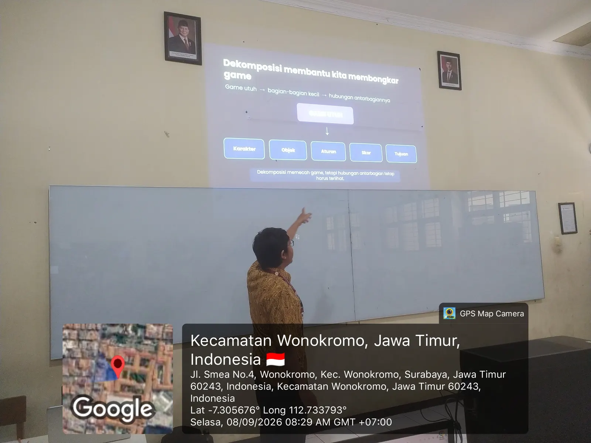
Siklus 3 · 15, 22, dan 29 September 2026
Konsep Gim, Variabel, dan Percabangan
Pertemuan I
Menuntaskan analisis gim dan memulai transisi menuju konsep gim.
Pertemuan II
Penyusunan konsep, diskusi kelompok, dan eksplorasi Scratch.
Pertemuan III
Variabel dan logika percabangan dalam Scratch yang diselaraskan dengan CP.
Modul Siklus 3AKonsep GimBuka ↗Modul Siklus 3BVariabel dan Percabangan ScratchBuka ↗LK 4.3 Refleksi Praktik Pembelajaran MandiriSiklus 3Baca ↗

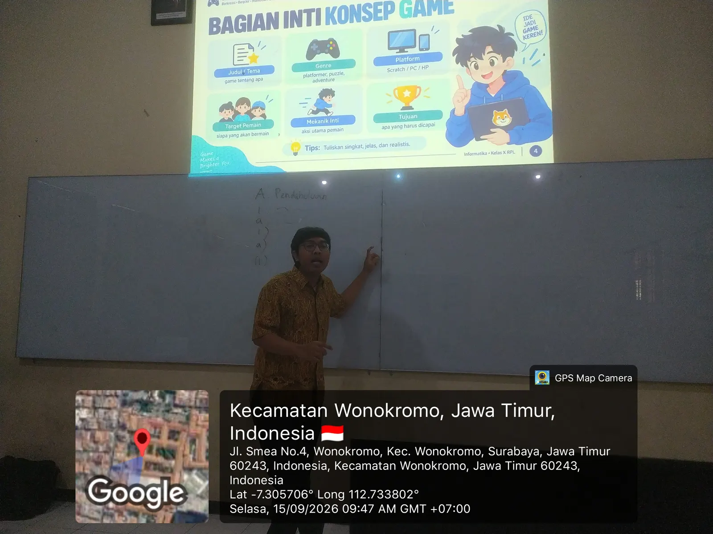

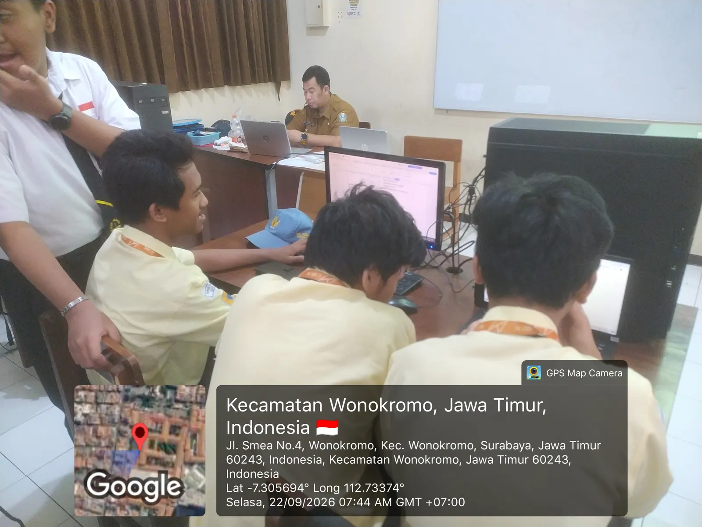

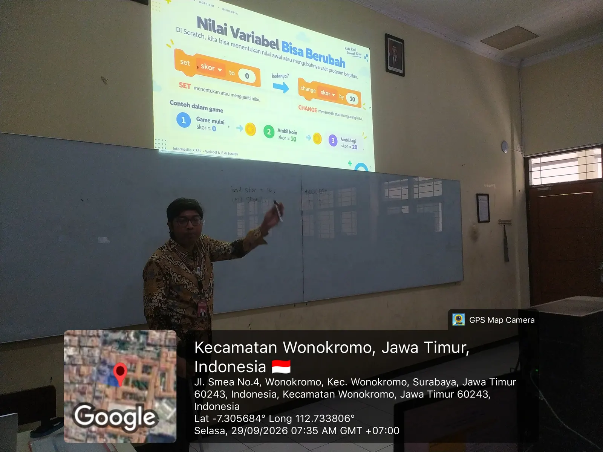
Siklus 4 · 6–20 Oktober 2026
Struktur Data, Asesmen, dan Linear Search
Pertemuan I · Struktur Data Dasar
Variabel, tipe data, array/list, stack, dan queue melalui analogi konkret.
Asesmen
Asesmen 25 soal melalui Quizizz/Wayground dan pembersihan data percobaan berulang.
Pertemuan II · Linear Search
Pencarian data dalam array/list melalui penjelasan di papan tulis dan tanya jawab.
Sorting sederhana tercantum sebagai rencana Pertemuan III dalam modul, tetapi belum ditampilkan sebagai kegiatan terlaksana karena belum ada log pendukung.
Modul Siklus 4Struktur Data, Searching, dan SortingBuka ↗LK 4.4 Refleksi Praktik Pembelajaran MandiriSiklus 4Baca ↗Laporan Pelaksanaan Siklus 4Pelaksanaan dan luaranBuka ↗

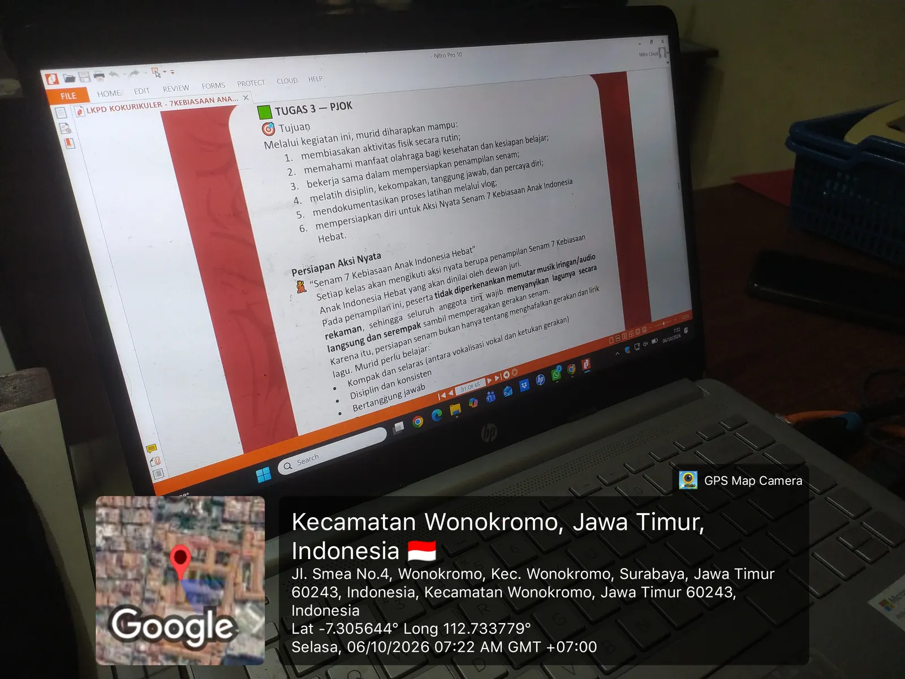

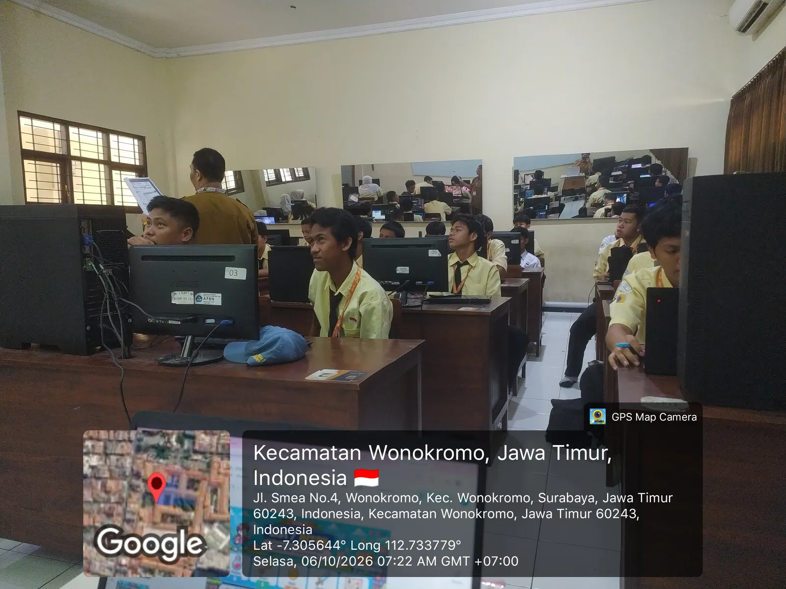
13 Oktober 2026
Asesmen dan Tindak Lanjut
Instrumen, hasil, dan tindak lanjut dipisahkan agar pembaca memahami fungsi setiap bukti. Data mentah murid tidak dijadikan kartu publik.
Satu video terpilih · 6 Oktober 2026
Video Pembelajaran Praktik Pembelajaran Mandiri
Rekaman Siklus 4 Pertemuan I tentang Struktur Data Dasar. Analisis pembelajaran menggunakan Experiential Learning dan Pembelajaran Sosial Emosional sebagai landasan, tanpa mengubah judulnya menjadi mata kuliah PSE.
Analisis artefak
Perencanaan, Materi, Media, dan Penilaian
Laporan akhir
Laporan PPL Mandiri
Draf laporan tersedia di penyimpanan lokal.
Versi final akan ditautkan setelah dokumentasi dimasukkan dan lembar bertanda tangan selesai dipindai serta digabungkan.
Galeri Semester 2
Dokumentasi PPL Mandiri
Foto sudah dikelompokkan menurut tahap dan siklus. Foto yang masih berada di kelompok pemeriksaan tidak ditampilkan.